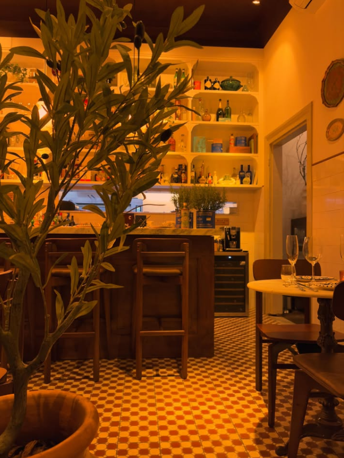
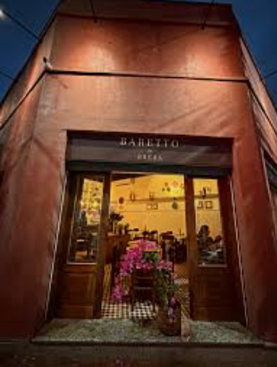

Dal 2024 · Sousas, Campinas
Aperitivo Italiano & Coquetelaria Clássica
No coração de Sousas, em frente à praça da Igreja. Um pedaço de Milão e a arte do bem-viver — vinhos, drinks autorais e aperitivos para compartilhar.

Il Rituale
O Ritual Sagrado do Aperitivo
O momento em que o dia desacelera.
O aperitivo é mais que um drink antes do jantar. É a pausa milanesa — um instante celebrado entre goles de Spritz e pequenos prazeres à mesa.
Como extensão do restaurante Brera, o Baretto traz essa tradição para Sousas com curadoria de ingredientes, vinhos selecionados e coquetelaria clássica. Cada drink é preparado com calma; cada aperitivo, pensado para compartilhar.
Sob a direção do Chef Executivo Marcelo Moscardi, a cozinha celebra o sabor honesto da Itália — do frescor dos antepastos ao calor de uma boa conversa.
Conheça nossa história →L'Atmosfera
Um cantinho de Milão, em Sousas.
Paredes em terracota, a oliveira na entrada, a luz quente sobre os azulejos. Um refúgio íntimo onde o tempo passa mais devagar — e cada noite tem gosto de viagem.
A arte do bem-viver →
La Posizione
Em frente à Praça da Igreja, no coração de Sousas.
Sousas, Campinas · SP